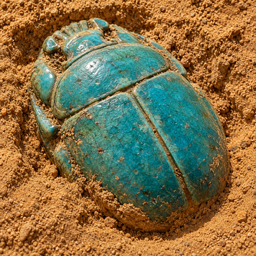

いせきほり サポートArtifact Cabinet Support
お問い合わせ
メール：sunahori.support@icloud.com
ご質問・不具合のご報告はこちらへ。お使いの端末（例：iPhone 15）と、起きたことを添えていただけると助かります。
掘る
世界の12か所の遺跡から好きな所を選び、指で土を払うと出土品が出てきます。出るのは、その遺跡で本当に出土した種類だけです。
無料の発掘は1時間に1回、5回までたまります。はじめは15回無料で掘れます。
資料館と図鑑
見つけた出土品は資料館の展示ケースに自動で並び、種類は図鑑に記録されます。展示ケースは名前を付けたり、テーマのケースを作ったりできます。
いらない出土品は手放すと「かけら」になり、かけら40個で1回掘れます。かけらで出土品をクリーニングすると、保存の等級が上がります（無傷まで）。
出る出土品と確率
遺跡ごとの出土品と確率は、アプリ内の「出土品と確率」で確認できます。
購入
発掘回数（10回・100回・330回・580回・1,200回）を購入できます。購入した回数も確率は同じで、期限はありません。購入した回数で「まとめて10回」掘ると、★3以上が1つと、その遺跡でまだ見つけていない★1〜3の種類が1つ必ず入ります（まだの種類が残っている間）。
記録について
見つけた出土品や記録はこの端末の中に保存されます。アカウント登録はありません。設定から記録を書き出して、別の端末に移せます。
出土品の絵と説明
出土品の種類・時代・出土地は、博物館の収蔵記録や発掘報告などの公開資料で確かめた事実をもとにしています。絵は、その種類の姿をこのアプリのために描いたもので、実在の1点の写真ではありません。
Contact
Email: sunahori.support@icloud.com
For questions and bug reports. Please tell us your device (for example, iPhone 15) and what happened.
Digging
Pick any of twelve famous archaeological sites and brush the soil away with your finger to uncover a find. Only kinds really dug up at that site come out.
A free dig comes back every hour, up to five. Your first 15 digs are free.
Your cabinet and guide
Finds go on display in your cabinet and into your field guide. You can name your cases and make theme cases.
Let a find you don't need go and it becomes fragments. 40 fragments make one dig. Spend fragments to clean a find up a grade (up to Pristine).
Finds and odds
The finds and odds for every site are shown in the app under "Finds and odds".
Purchases
You can buy digs (10, 100, 330, 580 or 1,200). Bought digs use the normal odds and never expire. Digging ten bought digs at once always brings one ★3+ and, while the site still has ★1–3 kinds you have not found, one of them.
Your data
Your finds are stored on this device. No account is needed. You can export your records from Settings to move them to another device.
Pictures and facts
The kinds of find, their periods and where they were dug are checked against public sources such as museum collections and excavation reports. The pictures show what each kind looks like and were made for this app; they are not photographs of real objects.